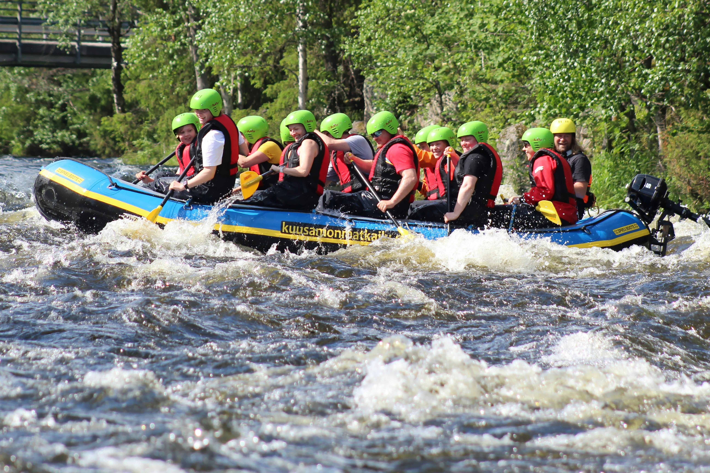

Rafting equipment has continuously evolved and developed significantly from old rubber WW II era military surplus rafts. Modern whitewater rafts are typically made with advanced nylon or Kevlar infused plastics like PVC or urethane; though many of the more entry-level low-cost manufacturers still use a glued rubber. Plastic is generally more durable, longer-lasting, and just as easy to repair compared to older rubber rafts
Experience the Thrill of Dry Oar Rafting
Ready for an adventure? Check out our Trips page now!

Thrilling Rapids
Paddles and oars are the typical means of propulsion for rafts and come in many sizes and varieties with specific river conditions in mind.

Breathtaking Views
Paddles are a combination of layered wood, plastic, aluminium, carbon fiber, or other advanced composites. There are many types and combinations of these materials with lower-end entry-level paddles being composed of cheap aluminum and plastic. Higher-end models are constructed of high-end composites and mostly utilized by professional rafting guides, raft racers, and expedition paddlers.

Expert Guides
Paddles are typically utilized by rafters in smaller and lower volume rivers where rocks and other hazards can damage larger oars. Paddles are typically used by guests on commercial trips as well since it is seen as a more engaging way to enjoy the river trip. When paddles are used in a raft it is referred to as "paddling" or "paddle guiding".